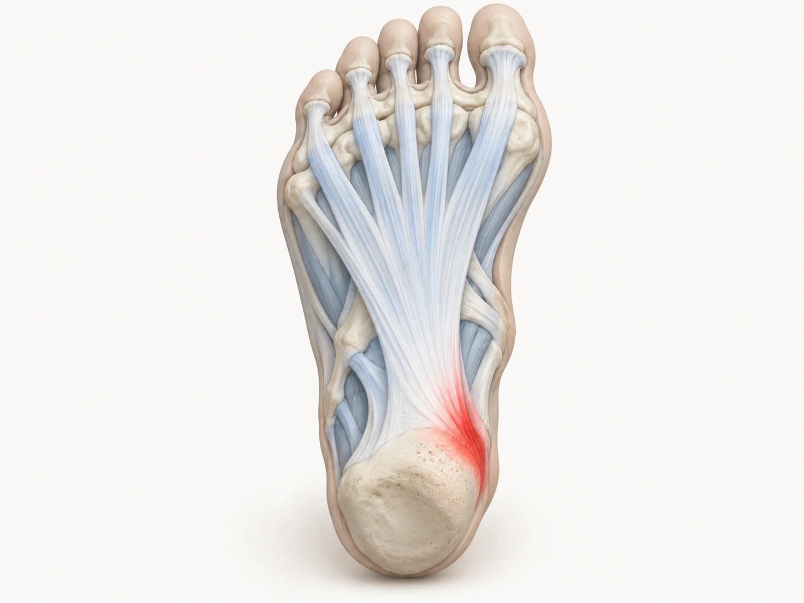
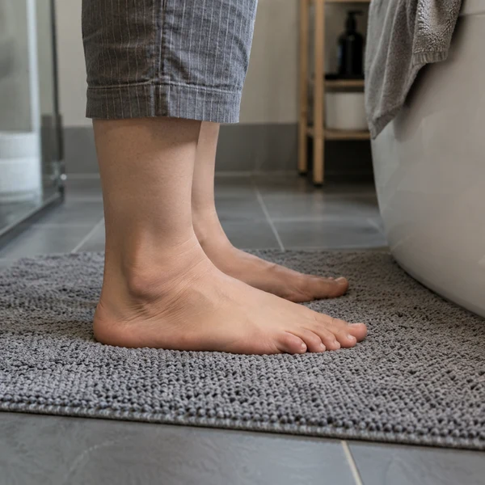
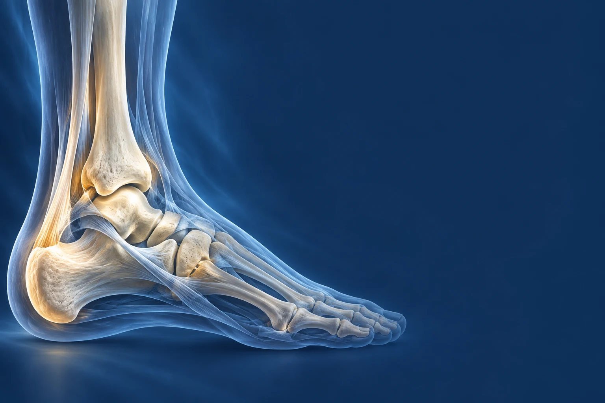
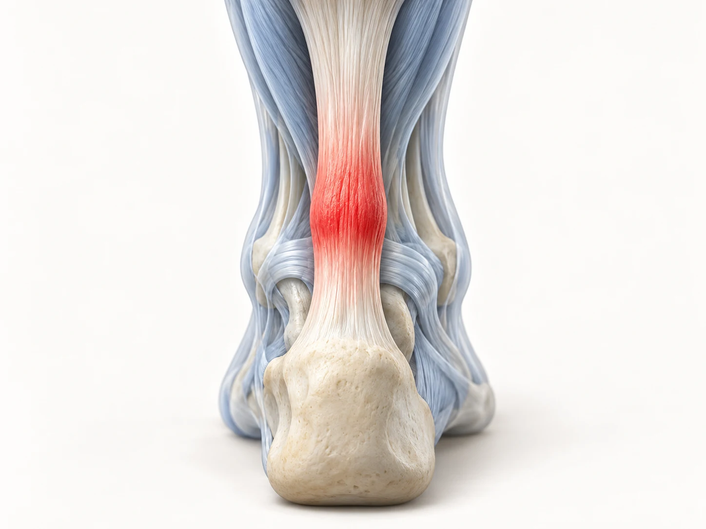
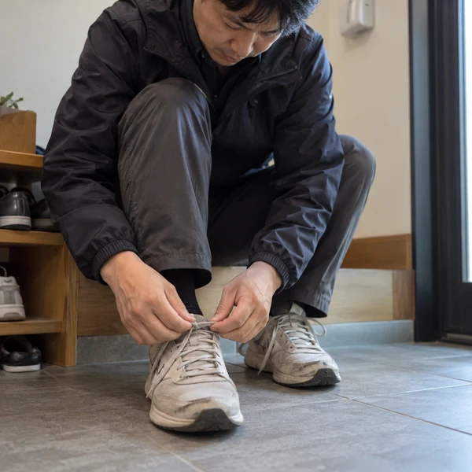
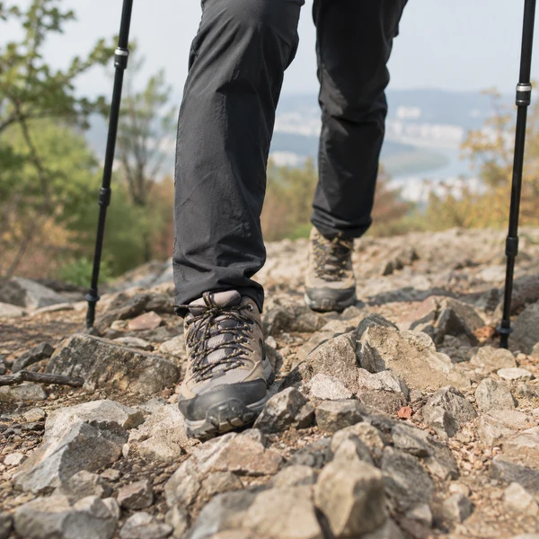
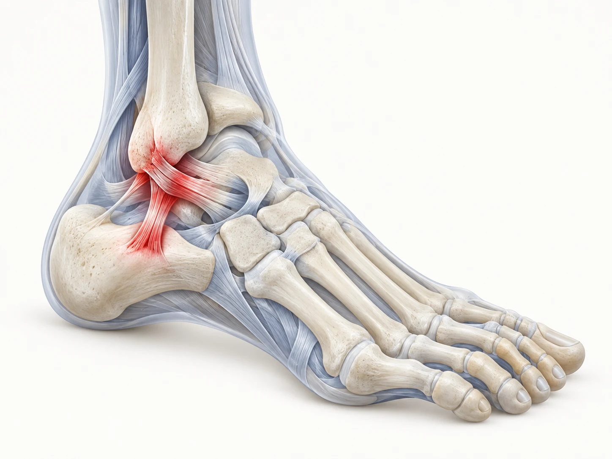
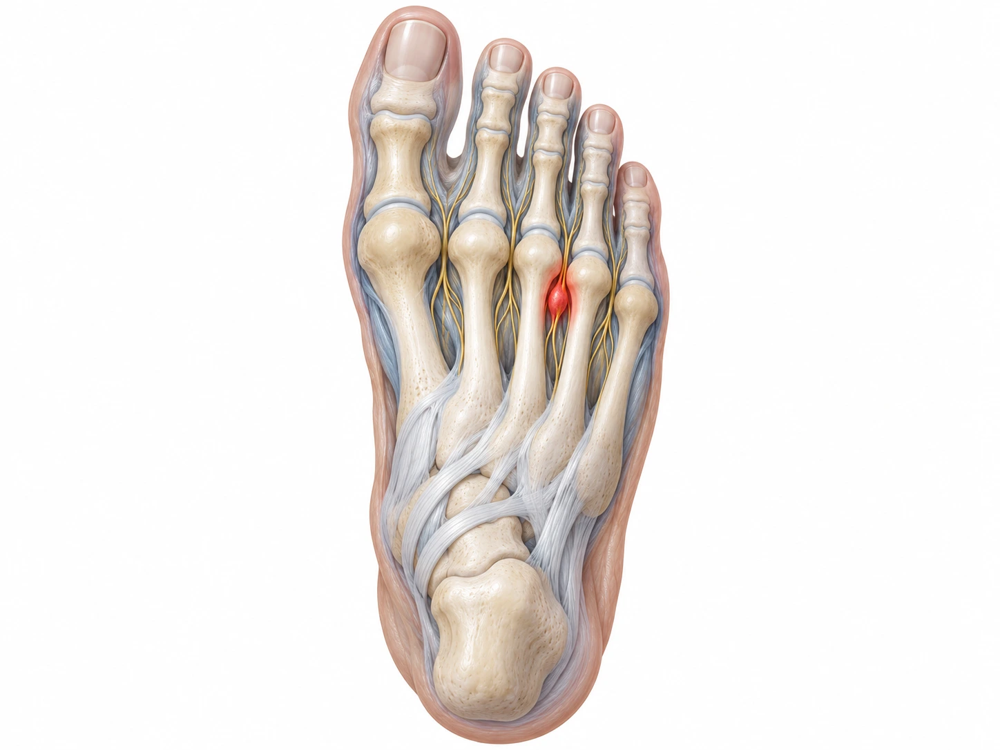
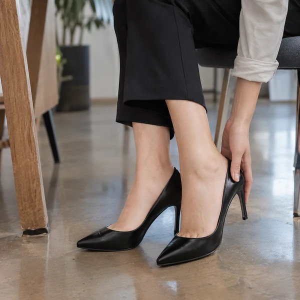

통증의 원인을 더 깊이 찾아가는 진료
발과 발목은 보행 때마다 체중을 받기 때문에 활동량과 신발, 이전 부상의 영향을 받습니다.
통증이 발바닥·뒤꿈치·발목 중 어디에 생기는지, 첫발이나 오래 걸을 때 어떻게 달라지는지,
힘줄과 인대, 신경의 상태를 확인해 치료와 생활 관리 방향을 안내합니다.
질환별 안내
ABOUT THE CONDITION
족저근막염
발바닥의 아치를 지지하는 족저근막에 반복적인 부하가 쌓여 뒤꿈치 통증이 생기는 질환입니다.

족저근막염의 원인
발바닥에 반복해서 가해지는 하중과 발의 구조가 족저근막에 영향을 줍니다.
발의 구조와 종아리 근육의 유연성도 함께
살펴봅니다.
장시간 서 있거나 바닥이 딱딱한 신발(플랫슈즈, 힐 등) 착용

갑작스러운 과도한 운동이나 급격한 체중 증가

평발이나 요족(아치가 높은 발) 등 발의 구조적 문제

종아리 근육 및 아킬레스건의 만성적인 단축

SYMPTOMS
족저근막염 대표 증상
- 01
아침에 일어나 첫발을 디딜 때 발뒤꿈치에 찢어지는 듯한 통증
- 02
일정 시간 걸으면 통증이 줄었다가 다시 오래 걸으면 심해짐
- 03
발뒤꿈치 안쪽 부위를 누르면 뚜렷한 압통 발생
- 04
발가락을 발등 쪽으로 젖힐 때 발바닥 통증 가중
- 05
저녁이 될수록 발바닥이 뻐근하고 열감이 느껴짐
족저근막염의 진단
통증이 나타나는 위치와 보행의 변화, 힘줄·인대·신경의 상태를 함께 살펴
필요한 검사와 치료 방향을 안내합니다.

문진·신체검진
통증이 시작된 시점과 양상, 병력과 생활 습관을 확인합니다. 압통과 움직임, 근력·감각 등을 함께 살펴 진단의 방향을 정합니다.

움직임·기능 평가
아픈 부위를 누르거나 움직일 때의 반응을 확인합니다. 관절의 움직임 범위와 근력, 일상 동작에서 나타나는 불편함을 함께 평가합니다.

초음파검사
초음파로 힘줄과 인대 등 연부 조직을 살펴봅니다. 통증 부위의 염증·부종이나 움직임에 따른 변화를 확인할 필요가 있을 때 활용합니다.
검사는 증상과 진찰 결과에 따라 필요한 항목을 선택합니다.
ABOUT THE CONDITION
아킬레스건염
종아리 근육과 뒤꿈치뼈를 잇는 아킬레스건에 반복적인 부담이 쌓여 생기는 질환입니다.

아킬레스건염의 원인
달리기와 점프처럼 발뒤꿈치에 반복해서 힘이 실리는 활동이 힘줄에 부담을 줄 수 있습니다.
운동량 변화와 종아리의 유연성,
신발도
관련됩니다.

런닝, 점프, 구기 종목 등 아킬레스건에 충격을 주는 운동

종아리 근육의 뭉침 및 유연성 부족

쿠션이 없는 딱딱한 신발 착용

갑작스럽게 운동 강도나 시간을 늘린 경우
SYMPTOMS
아킬레스건염 대표 증상
- 01
발뒤꿈치 윗부분이나 아킬레스건 부위가 뻐근하게 아픔
- 02
까치발을 들거나 뛸 때 통증 가중
- 03
아침에 첫발을 디딜 때 아킬레스건 부위가 뻣뻣함
- 04
해당 부위를 손으로 잡거나 누르면 통증 발생
- 05
운동 후 발뒤꿈치 부위가 빨갛게 부어오르고 열감 발생
갑자기 툭 끊어지는 느낌과 함께 걷기 어려워지면 파열 여부를 즉시 확인해야 합니다.
아킬레스건염의 진단
통증이 나타나는 위치와 보행의 변화, 힘줄·인대·신경의 상태를 함께 살펴
필요한 검사와 치료 방향을 안내합니다.
문진·신체검진
통증이 시작된 시점과 양상, 병력과 생활 습관을 확인합니다. 압통과 움직임, 근력·감각 등을 함께 살펴 진단의 방향을 정합니다.
움직임·기능 평가
아픈 부위를 누르거나 움직일 때의 반응을 확인합니다. 관절의 움직임 범위와 근력, 일상 동작에서 나타나는 불편함을 함께 평가합니다.
초음파검사
초음파로 힘줄과 인대 등 연부 조직을 살펴봅니다. 통증 부위의 염증·부종이나 움직임에 따른 변화를 확인할 필요가 있을 때 활용합니다.
검사는 증상과 진찰 결과에 따라 필요한 항목을 선택합니다.
ABOUT THE CONDITION
만성 발목 염좌 및 발목 관절 불안정증
발목을 접질린 뒤 인대와 주변 기능이 충분히 회복되지 않아 불안정함이 남는 상태입니다.

만성 발목 염좌 및 발목 관절 불안정증의 원인
발목을 접질린 뒤 인대와 근력이 충분히 회복되지 않으면 불안정감이 이어질 수 있습니다.
반복적인 외상과 하체의 균형도 영향을
줍니다.

발목을 접질린 후 적절한 치료 없이 방치한 경우

울퉁불퉁한 길을 걷거나 스포츠 활동 중 발생한 외상

발목 주변 외측 인대의 변형 및 회복 지연

하체 정렬 불균형 및 발목 근력 약화
SYMPTOMS
만성 발목 염좌 및 발목 관절 불안정증 대표 증상
- 01
길을 걸을 때 발목이 힘없이 꺾일 것 같은 불안정감
- 02
잦은 염좌 발생과 함께 복사뼈 주변에 뻐근한 통증 지속
- 03
계단을 내려가거나 울퉁불퉁한 길을 걸을 때 통증 심화
- 04
운동 후 발목 주변이 자주 붓고 쑤심
- 05
발목을 움직일 때 소리가 나거나 걸리는 느낌
만성 발목 염좌 및 발목 관절 불안정증의 진단
통증이 나타나는 위치와 보행의 변화, 힘줄·인대·신경의 상태를 함께 살펴
필요한 검사와 치료 방향을 안내합니다.
문진·신체검진
통증이 시작된 시점과 양상, 병력과 생활 습관을 확인합니다. 압통과 움직임, 근력·감각 등을 함께 살펴 진단의 방향을 정합니다.
움직임·기능 평가
아픈 부위를 누르거나 움직일 때의 반응을 확인합니다. 관절의 움직임 범위와 근력, 일상 동작에서 나타나는 불편함을 함께 평가합니다.
초음파검사
초음파로 힘줄과 인대 등 연부 조직을 살펴봅니다. 통증 부위의 염증·부종이나 움직임에 따른 변화를 확인할 필요가 있을 때 활용합니다.
검사는 증상과 진찰 결과에 따라 필요한 항목을 선택합니다.
ABOUT THE CONDITION
지간신경종
발가락으로 향하는 신경이 압박과 자극을 받아 주변 조직이 두꺼워지는 상태입니다.

지간신경종의 원인
좁은 신발과 반복적인 앞발 압박은 발가락 사이 신경을 자극할 수 있습니다.
발의 구조와 오래 서 있거나 걷는 생활도
관련됩니다.

발 앞쪽을 압박하는 좁은 신발이나 하이힐
앞발에 반복적으로 가해지는 충격과 마찰
평발 등 발 구조의 불균형과 전족부 부담
장시간 서 있거나 많이 걷는 작업 환경
SYMPTOMS
지간신경종 대표 증상
- 01
발바닥 앞쪽(3~4번째 발가락 사이)이 불에 타는 듯 찌릿함
- 02
신발을 벗고 마사지하면 통증이 일시적으로 줄어듦
- 03
발바닥에 자갈이 들어있는 듯한 모래알 이물감
- 04
발가락이 둔해지거나 저린 감각 이상 느낌
- 05
굽 높은 신발을 신을 때 통증이 더욱 심해짐
지간신경종의 진단
통증이 나타나는 위치와 보행의 변화, 힘줄·인대·신경의 상태를 함께 살펴
필요한 검사와 치료 방향을 안내합니다.
문진·신체검진
통증이 시작된 시점과 양상, 병력과 생활 습관을 확인합니다. 압통과 움직임, 근력·감각 등을 함께 살펴 진단의 방향을 정합니다.
움직임·기능 평가
아픈 부위를 누르거나 움직일 때의 반응을 확인합니다. 관절의 움직임 범위와 근력, 일상 동작에서 나타나는 불편함을 함께 평가합니다.
초음파검사
초음파로 힘줄과 인대 등 연부 조직을 살펴봅니다. 통증 부위의 염증·부종이나 움직임에 따른 변화를 확인할 필요가 있을 때 활용합니다.
검사는 증상과 진찰 결과에 따라 필요한 항목을 선택합니다.
TREATMENT
회복을 위한 치료 프로그램
환자의 상태에 따라 필요한 치료를 판단합니다.